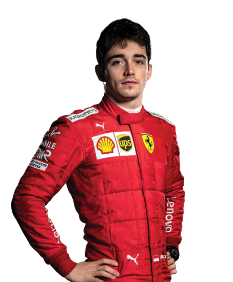
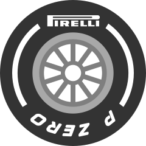
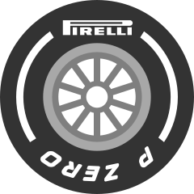

Scuderia Ferrari
Najbardziej rozpoznawalny zesp贸 F1 i legenda tego sportu. Nie stety, to nie jest ich najlepszy okres, a rok 2020 by jednym z najgorszych sezon贸w w historii. Mimo wielu pr贸b, nie udao im si zdoby mistrzostwa w erze hybrydowej. Jednakże wierne tifossi liczy na zakoczenie zej passy. Zesp贸 patrzy w przyszo i przygotowuje si do gruntownych zmian regulacji w 2022 roku. Może wtedy powr贸c na szczyt.
Kierowcy
| Charles Leclerc | Carlos Sainz |
|---|---|
|  | |
| Zachwyca w seriach modzieżowych i zachwyca w F1. Mimo że Ferrari nie jest w najlepszej formie, Leclerc wyciga z tego samochodi wszystko co możliwe. Jest to bardzo utalentowany kierowca i potencjalny mistrz wiata. | Ukochany Hiszpan, kt贸ry po wielu migracjach, w kocu zawita do legendarnego Ferrari. Jednakże, ma przed sob ciżkie zadanie. Nie doc że bdzie pracowa nad tym by Ferrari wr贸cio na szczyt, ale jego kolega z zespou raczej nie bdzie go przepuszcza. |
Galeria
×

×

×


 
